Zato što možete da izaberete komponente koje želite i koje će savršeno odgovarati
vašim potrebama.
Zato što možete bolje da rasporedite budžet.
Zato što ćete u budućnosti moći lakše da
nadogradite i održavate svoj računar.
I na kraju…
Sastavljanje računara je podjednako zabavno kao i slaganje Lego kocaka. Međutim, pre nego što sastavite svoju borbenu ili radnu mašinu, potrebno je da se upoznate sa njenim delovima. Iako se desktop računari međusobno mogu razlikovati po nameni i stilu, određeni delovi su zajednički za svaki računar jer bez tih delova računar ne bi mogao da funkcioniše. Upoznajte osnovne delove desktop računara.
|
Procesor |
Hladnjak |
Matična ploča |
|
Memorija |
Grafička |
Hard disk |
|
Napajanje |
Kućište |
Periferni |
Da li ste nekada poželeli da sastavite svoj PC?
Preuzmite elektronski priručnik (na engleskom jeziku) koji će vam pomoći pri sklapanju računara.
Gigatron i kompanija MSI vam donose kompletan i detaljan vodič uz koji ćete lako i samostalno sastaviti svoj PC. Ne brinite, uz ovaj praktični video-vodič će čak i oni koji sklapaju svoj prvi računar moći da sastave odličan PC! Zasucite rukave, zgrabite šrafciger, naoružajte se pozitivnom energijom i možemo da počnemo.
Odaberite željenu video-lekciju:
Pre nego što počnete, pripremite sledeće:
1. Krstasti šrafciger sa namagnetisanim vrhom;
2. Plastične vezice (šelne) i makaze;
3. Ravnu i čistu površinu koja nije elektroprovodna, na kojoj ćete raditi;
4. Duboko udahnite, pročitajte sva uputstva koja ste dobili uz komponente i bićete spremni za rad.
Upozorenje:
Metalni pinovi (vrhovi / iglice) na poleđini matične ploče su lako lomljivi. Nikada nemojte matičnu ploču stavljati direktno na tvrdu površinu kako ne biste oštetili pinove.
Odaberite željenu video-lekciju:
1. Otkopčajte poklopac na ležištu za procesor;
2. Pažljivo postavite procesor u procesorsko ležište (soket), vodeći računa da se svi izrezi (ili druga obeležja za orijentaciju) na procesoru i procesorskom ležištu podudaraju;
3. Uverite se da ste procesor ispravno postavili u procesorsko ležište i nakon toga ponovo zakopčajte poklopac procesorskog ležišta.
Upozorenje:
Budite pažljivi sa pinovima (iglicama) koji se nalaze na donjoj strani procesora ili na procesorskom ležišu. Pinovi su izrađeni od zlata, koje je vrlo mek materijal, pa se mogu veoma lako oštetiti. Čak i najmanja sila je dovoljna da se pinovi iskrive, što može uzrokovati probleme u radu procesora.
Odaberite željenu video-lekciju:
1. Stisnite tj. oborite nadole osigurače (jezičke) koji se nalaze na krajevima ležišta za memoriju kako biste ležišta pripremili za instalaciju memorijskih modula;
2. U uputstvu za vašu matičnu ploču pronađite informacije o redosledu instalacije memorijskih modula. U slučaju da koristite samo jedan ili dva memorijska modula, odnosno ukoliko nećete popuniti sva ležišta za memoriju, proverite koja ležišta je preporučeno da koristite;
3. Ravno ubacite memorijski modul u ležište i stisnite ga nadole. Kada čujete „klik“, odnosno kada se osigurači (jezičci) vrate u gornji položaj, to je znak da je memorijski modul zaključan, čime je njegova instalacija završena.
Savet:
Preporučeni redosled instalacije memorijskih modula, tj. koje ćete ležište prvo upotrebiti, zavisi od modela vaše matične ploče. Kod MSI matičnih ploča, na primer, preručeno je da prvi memorijski modul instalirate u ležište sa oznakom DIMM1.
Odaberite željenu video-lekciju:
1. Ukoliko je potrebno, vijak koji M.2 drajv odiže od matične ploče postavite ili pomerite na odgovarajuću poziciju, u zavisnosti od dužine vašeg M.2 drajva, a zatim ga pričvrstite zavrtanjem;
2. Pod uglom od 45°, nežno ubacite svoj M.2 drajv u odgovarajući M.2 konektor na matičnoj ploči;
3. Pritisnite M.2 drajv nadole kako bi legao na vijak, a zatim ga fiksirajte malim šrafom koji ste dobili uz svoju matičnu ploču.
Savet:
Pojedine matične ploče iz višeg segmenta poseduju specijalne hladnjake za M.2 drajvove. Dodatni koraci instalacije su objašnjeni u uputstvu za vašu matičnu ploču.
Odaberite željenu video-lekciju:
1. Ukoliko uz vaš procesorski hladnjak dolazi i takozvani back-plate držač, montirajte ga na poleđinu matične ploče;
2. Na površinu procesora nanesite malo termalne paste, u količini koja odgovara veličini jedne kapi;
3. Hladnjak procesora poseduje ventilator. Priključite kabl ventilatora na „CPU Fan“ priključak na matičnoj ploči;
4. Postavite hladnjak na procesor i zatim ga pričvrstite ravnomernim zavijanjem unakrsnih šrafova.
Upozorenje:
Važno je da dobro odmerite količinu termalne paste koju ćete naneti na procesor. Premalo ili previše termalne paste će rezultovati lošim kontaktom i otežanim prenosom toplote sa procesora na hladnjak, a postoji i mogućnost da se višak paste razlije po ležištu za procesor. Uverite se da su šrafovi hladnjaka dobro zavijeni i da je pritisak koji hladnjak vrši na procesor ujednačen na sve četiri strane. U suprotnom može doći do oštećenja procesora ili degradacije rashladnih performansi.
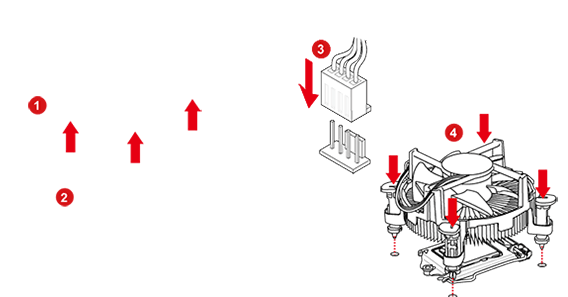Odaberite željenu video-lekciju:
1. Instalirajte takozvani „I/O Shield“, tj. lim koji štiti spoljne priključke na matičnoj ploči:
2. Pod uglom od 45°, lagano spustite matičnu ploču u kućište;
3. Poravnajte rupe za šrafove na matičnoj ploči sa rupama u kućištu;
4. Pričvrstite matičnu ploču tako što ćete iskoristiti sve raspoložive rupe za šrafove.
Savet:
Nemojte štedeti šrafove. Iskoristite sve raspoložive rupe za šrafove kako biste dobro pričvrstili matičnu ploču i na taj način eliminisali mogućnost pomeranja matične ploče tokom transporta ili rada kompjutera.
Odaberite željenu video-lekciju:
1. Uklonite takozvani „bracket“ tj. zaštitni lim sa PCI-e otvora na kućištu;
2. Otključajte PCI-e ležište na matičnoj ploči tako što ćete plastični jezičak, koji se nalazi na zadnjem delu PCI-e ležišta, pritisnuti nadole;
3. Držite grafičku karticu obema rukama, lagano je spustite u kućište i postavite u PCI-e ležište na matičnoj ploči;
4. Odgovarajućim šrafom pričvrstite grafičku karticu za zadnju stranu kućišta kompjutera.
Upozorenje:
Grafičke kartice iz višeg segmenta mogu biti vrlo dugačke i / ili široke te mogu zauzimati više prostora u kućištu. Pre kupovine kućišta proverite da li će u njemu biti dovoljno mesta za vašu grafičku karticu.
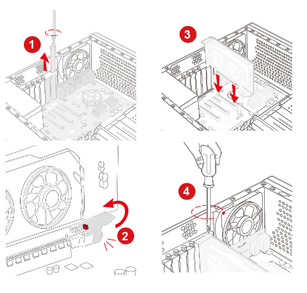Odaberite željenu video-lekciju:
1. Jedan kraj SATA kabla uključite u SATA priključak na matičnoj ploči, a drugi kraj kabla uključite u uređaj za skladištenje podataka (hard disk ili SSD, veličine 2,5 ili 3,5 inča).
Upozorenje:
Uverite se da ste hard disk dobro pričvrstili za kućište, kako ne bi došlo do oštećenja samog hard diska ili neke druge komponente.
Odaberite željenu video-lekciju:
1. Montirajte napojnu jedinicu (PSU) u kućište i pričvrstite je tako što ćete iskoristiti sve rupe predviđene za šrafove;
2. Uključite 24-pinski konektor u odgovarajući priključak na matičnoj ploči;
3. Uključite 8-pinski konektor za napajanje procesora u odgovarajući priključak na matičnoj ploči;
4. Kabl na čijem se kraju nalazi PCIe konektor, sa 6+2 pina, uključite u odgovarajući priključak na grafičkoj kartici. Imajte u vidu da neke grafičke kartice ne poseduju ovaj priključak, dok se neke napajaju pomoću dva ovakva kabla, u zavisnosti od modela;
5. Uključite naponski SATA konektor u naponski SATA priključak na vašem hard disku;
6. Ukoliko vaš računar poseduje optički uređaj ili druge dodatne uređaje, obezbedite im dotok električne energije pomoću kablova na čijim se krajevima nalaze takozvani 4-pinski Molex konektori.
Savet:
Veoma je važno da odaberete napajanje odgovarajuće snage. Postoje onlajn kalkulatori za izračunavanje snage, uz pomoć kojih ćete lako izračunati koja je snaga potrebna komponentama vašeg računara. Preporuka je da napajanje uvek bude za klasu jače u odnosu na realne potrebe vašeg računara, kako biste osigurali da će vaše napajanje imati dovoljno snage i ukoliko u budućnosti izvršite nadogradnju svog računara.
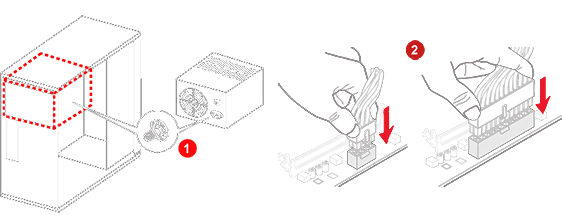Odaberite željenu video-lekciju:
1. Povežite konektore sa oznakama Power Switch, Reset Switch, Power LED, HDD LED na odgovarajući igličasti konektor (heder) na matičnoj ploči;
2. Povežite kablove za prednje USB priključke na odgovarajuće igličaste USB konektore (hedere) na matičnoj ploči:
2.1. USB 3.0 kabl na USB 3.0 konektor, USB 2.0 kabl na USB 2.0 konektor;
2.2. Prednji USB Type-C kabl na Front USB Type-C konektor;
3. Povežite kabl za prednje audio priključke (slušalice i mikrofon) na odgovarajući igličasti konektor na matičnoj ploči.
Savet:
Pre kupovine kućišta, proverite raspoloživi broj USB konektora na svojoj matičnoj ploči, kako se ne bi dogodilo da neki USB priključci na kućištu ili matičnoj ploči ostanu van funkcije. Verovatno želite sve da ih iskoristite, zar ne?
Odaberite željenu video-lekciju:
1. Pomoću plastičnih vezica ili čičak-traka grupišite kablove i fiksirajte ih za kućište računara.
Odaberite željenu video-lekciju:
1. Umetnite medijum za instalaciju operativnog sistema (CD/DVD ili USB fleš memoriju);
2. Pažljivo sledite korake za instalaciju operativnog sistema;
3. Sa sajtova proizvođača vaših PC komponenti preuzmite i instalirajte najnovije upravljačke programe (drajvere).
Jedna od prednosti samostalnog sastavljanja računara je to što svoj budući računar možete do
najsitnijih detalja prilagoditi svojim željama i potrebama. Bez obzira na to da li ćete na svom novom kompjuteru
igrati zahtevne igre ili ćete ga intenzivno koristiti za izradu multimedijalnog sadržaja, saveti koji slede će
vam pomoći da odaberete prave komponente za svoj PC.
U zavisnosti od toga da li sklapate Gaming PC,
Custom PC ili Streaming PC, kliknite na odgovarajuću ikonicu.
gaming pc
custom pc
streaming pc
U širokoj ponudi kompanije Gigatron možete pronaći sve komponente koje su vam potrebne da biste
sastavili vrhunski kućni, kancelarijski ili gaming kompjuter, što će, zahvaljujući ovom vodiču, biti jednostavno
kao 1-2-3.
Na raspolaganju su vam proizvodi vodećih svetskih proizvođača, koje možete kupiti u svim
maloprodajnim objektima kompanije Gigatron ili putem naše internet prodavnice, uz isporuku na željenu adresu i
uz mogućnost plaćanja na rate bez kamate.
Bez obzira na to da li će se vaš novi računar bazirati na Intel ili AMD procesoru, u Gigatronu ćete pronaći sve najpopularnije i najnovije modele računarskih procesora. Pre nego što odaberete model procesora, uverite se da je on kompatibilan sa matičnom pločom koju želite da ugradite u svoj računar ili koju možda već imate u svom računaru.
Nudimo vam široku paletu vazdušnih procesorskih hladnjaka, kao i veliki broj AiO sistema za tečno (vodeno) hlađenje procesora. Pre izbora hladnjaka, proverite specifikaciju vašeg kućišta kako biste se uverili da će u njemu biti dovoljno mesta za hladnjak koji želite da ugradite. Takođe, uverite se da je hladnjak kompatibilan sa procesorom odnosno procesorskim podnožjem (ležištem).
Kompanija MSI je jedan od najboljih svetskih proizvođača računarskih matičnih ploča. MSI matične ploče su čest izbor profesionalnih gejmera i PC entuzijasta. Ukoliko odaberete model koji je opremljen MSI Mystic Light tehnologijom, uživaćete i u prelepim svetlosnim efektima. Pre nego što odaberete model matične ploče, uverite se da je ona kompatibilna sa procesorom koji želite da ugradite u svoj računar ili koji možda već imate u svom računaru.
Kapacitet i brzina RAM-a (radne memorije) igraju veliku ulogu u sveukupnim performansama računara. Preporučujemo vam da svoj računar opremite sa minimalno 8 GB memorije, u konfiguraciji 2 x 4GB. Korišćenjem dva memorijska modula, umesto jednog, memorija će raditi u dvokanalnom režimu, što će se primetno i pozitivno odraziti na performanse vašeg PC-a. Ukoliko ste ljubitelj RGB osvetljenja, dobra vest je da su RGB memorije odavno deo Gigatronovog asortimana.
Tradicionalno kvalitetne, MSI grafičke kartice se baziraju na najnovijim grafičkim procesorima kompanija NVIDIA i AMD, a u ponudi su modeli među kojima ćete sigurno lako pronaći onaj koji odgovara vašim potrebama, željama i budžetu. Imajte u vidu da će MSI grafička kartica sa Mystic Light RGB osvetljenjem vašem računaru, pored odličnih performansi, dati i upečatljiv, gejmerski izgled. Pre odabira, u specifikaciji svog kućišta proverite koja je maksimalna dužina grafičke kartice koju u njega možete ugraditi.
SSD uređaji, pogotovo ukoliko su M.2 NVMe tipa, pružaju izuzetno velike brzine čitanja i snimanja podataka. Drugim rečima, učitavanje operativnog sistema, programa, video-igara i novih nivoa u igrama će biti višestruko brže nego kod tradicionalnog hard diska. Ukoliko vam je istovremeno potreban i vrlo veliki prostor za skladištenje podataka, u svoj računar možete dodati i tradicionalni hard disk velikog kapaciteta, koji ćete koristiti za arhiviranje.
Kvalitetno napajanje, tj. napojna jedinica, će komponentama vašeg kompjutera obezbediti čist i stabilan napon, što će rezultovati boljim radnim performansama i dužim životnim vekom samih komponenti. Uverite se da napajanje koje želite da ugradite u svoj računar ima dovoljno snage (izraženo u vatima), kako bi vaš računar ispravno funkcionisao. Ukoliko želite da unutrašnjost vašeg računara bude uredna i lepa, preporučujemo vam da odaberete neki od modela modularnih napajanja, koji omogućava da sve suvišne kablove jednostavno otkačite, kako ne bi pravili nered unutar računara.
Kućište je dom računarskim komponentama. Zato se trudite da u njemu uvek ima dovoljno mesta za ono što vam je potrebno, tj. za sve komponente koje želite da ugradite u svoj računar. Ukoliko želite da istaknete estetiku unutrašnjih komponenti vašeg računara, odaberite kućište sa providnom bočnom stranicom i sistemom za organizovanje i smeštanje kablova, kako se ne bi videli.
Miš i tastatura su uređaji koje najviše koristimo u interakciji sa računarom. Zato ovi uređaji treba da budu udobni za korišćenje i da vam njihovim funkcijama olakšaju i ubrzaju rad na računaru. Ukoliko sklapate gaming kompjuter, imajte u vidu da se u žaru igre miš i tastatura koriste vrlo intenzivno i energično. Ukoliko ste gejmer, preporučujemo da odabere izdržljivog gaming miša, sa brzim i preciznim senzorom pokreta, kao i kvalitetnu mehaničku tastaturu. Ne zaboravite da u igrama često odlučuju milisekunde.
U ponudi kompanije Gigatron vas očekuje širok asortiman računarskih monitora, za različite namene. Od kućnih i kancelarijskih monitora opremljenih tehnologijama koje čuvaju vaš vid, preko gaming monitora sa visokom frekvencijom osvežavanja ekrana i brzim odzivom, pa sve do profesionalnih monitora za obradu fotografija i video-montažu - sve to možete kupiti putem naše internet prodavnice ili u našim prodajnim objektima, uz mogućnost plaćanja na rate bez kamate i uz dostavu na vašu adresu.
Kada se upustite u avanturu sklapanja računara i počnete da učite o njima, sigurno ćete u glavi imati mnogo pitanja, što je potpuno normalno i očekivano. Kako bismo vam pomogli da brzo i lako nađete odgovore, napravili smo listu najčešće postavljanih pitanja i razvrstali ih u nekoliko kategorija.